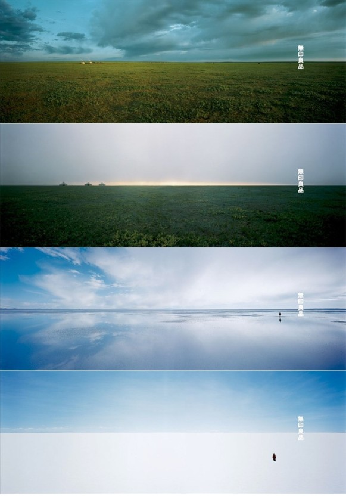

Interview
인터뷰
— 한국에서 열린 ‘하우스비전 코리아’를 오랜 기간 기획하고 준비한 것으로 알고 있습니다. 드디어 현장을 직접 보고 관람객들도 만났을 텐데 소감이 어떠셨나요?
하우스 비전 코리아는 지난 2017년부터 서울에서 몇 건의 연구회를 진행했습니다. 여러 단계를 거쳐 최종으로 개최 파트너 ‘만나CEA’와 함께 ‘새로운 관점으로 농업을 바라본다’를 테마로 박람회를 기획하게 되었어요. 만나CEA의 거대한 온실 농장이 전시장 역할을 하는 가운데 농업과 지역민들의 생활, 커뮤니티를 어떻게 구축할 것인지에 대해 전시를 구성했습니다. ‘양의 집’은 아주 심플한 집이에요. 사람들이 이 집을 보면서 어떤 점을 느낄지 궁금했습니다. 아마 감도가 높은 사람들은 진천에 하우스비전이 열린 것을 보고 교외의 가능성을 눈치채지 않으셨을까 합니다.
— 지금까지 도쿄, 북경에서 세 번의 하우스비전을 개최했습니다. 동아시아 각 주요 도시에서 열린 셈인데 앞 전시와 비교했을 때 한국에서의 전시에 다른 점이 있을까요?
한국은 5G 통신망처럼 풍요로운 정보통신 시설이 갖춰진 환경 덕에 진천에서 그 어떤 일이든 할 수 있었습니다. 지리적으로 서울도 가깝고요. 지역 생활에서 중요한 것은 커뮤니티입니다. 그래서 어떻게 커뮤니티를 만들 수 있을지를 생각했는데 그런 공간은 인공으로 만들긴 어려워요. 사람들이 자연스럽게 모일 수 있는 기분 좋은 장소를 먼저 준비하는 게 필요한데 진천은 그런 게 이미 준비가 되어 있어서 잘 맞아 떨어졌어요. 물론 그런 기분 좋은 장소는 한국에 정말 많이 있지요. 하우스비전은 실제 크기의 집을 짓는 다는 것이 전제되는 전시입니다. 실제 공간에 들어가 둘러보며 ‘이럴 수도 있다’는 것을 경험하는 것입니다. 건축을 하면 CG나 모형에서는 보이지 않는 디테일까지 생각해야 돼서 실제 크기를 만드는 것 자체가 큰 과제입니다. 지금까지의 하우스비전에서는 전람회가 끝나고 없어지는 집을 만들었습니다. 그런데 이번에는 없애지 않고 계속 남을 건물로 지어야 했습니다. 그러다 보니 실제 집으로 기능이 가능하도록 만들어야 해서 다른 전람회와 비교해 건축에 많은 공을 들이게 되었지요.
— 2016년 도쿄에서 열린 두 번째 하우스비전 은 ‘나뉘어 연결되고 떨어져서 모이는(Split and Connect/Separate and Come Together)’을 주제로 했습니다. 집에 대한 의미와 개인의 단절과 연결에 대해 생각해 보게 했던 전시였지요. 지금에서 보니 팬데믹 상황을 예견한 듯한 혜안이 놀라웠어요. 선생님 역시 팬데믹을 겪으며 집에 대해 어떤 생각이나 인사이트를 발견하셨는지 궁금한데요.
코로나를 지나면서 알게 된 것들이 많아요. 그중 하나는 일하는 공간에 대한 개념이에요. 회사를 가지 않아도 일을 할 수 있고, 다르게 말하면 자택에서만 일을 하는 것이 아니라 제주도나 외국이나 어디에서든 일을 할 수 있다는 사실이죠. 다들 아마 느끼고 있을 것이라고 생각합니다. 어디서 일을 하면 쾌적하게 할 수 있는지에 대해 고민하고 있고, 새로운 가능성을 느끼고 있습니다.
— 어디서든 일할 수 있는 ‘원격 근무’나 일과 휴식을 합친 ‘워케이션’과 함께 로컬에 대한 관심도 높아지고 있습니다. 그런데 한편에서는 여전히 지방 소멸에 대한 위험을 경고하고 있어요.
저는 지방 소멸은 없을 거라고 생각합니다. 로컬에는 미래 자원이 있고, 역사가 있는 지역에는 고유한 멋이 있습니다. 저는 그런 지역에 가능성이 있다고 봅니다. 이미 사람들은 도시에 한계를 느끼고 있어요. 도시에서는 비슷한 형태의 좁은 집을 높은 가격을 주고 살아야 합니다. 인간의 감각을 충족시켜주는 것은 경관이나 풍토 같은 자연스러운 것들이에요. 그런 가능성을 알아보고 어떻게 나아갈지 고민하는 게 오히려 첨단이라고 생각합니다.
— 로컬에 미래가 있다는 말씀이시군요.
세계는 점점 더 글로벌하게 변하고 있습니다. 이동이 편리해지고, 정보의 전달이 빨라질수록 로컬, 즉 고유성의 가치 자체는 커집니다. 중요한 것은 경제가 아닌 문화의 측면에서 로컬리티를 바라보는 것입니다. 이탈리아에 가서 먹는 파스타가 맛있는 건 이탈리아 사람들이 계속 파스타를 먹어왔고 파스타를 중시해 온 문화가 있기 때문입니다. 일본에서 먹는 스시가 맛있는 것도 같은 이유겠지요. 이렇듯 로컬의 잠재력을 잘 해석해 세상에 보여줄 수 있을지가 중요한데요. 나는 글로벌과 로컬이 대조되는 개념이 아닌 합체된 개념이라고 생각합니다. 그렇기에 어느 때보다 진심으로 농업을 생각하고 있고, IT나 엔터테인먼트 못지않게 첨단을 이끌어 갈 거라 생각합니다. 농업을 주제로 하우스비전을 개최한 지금 저는 새로운 시작점에 섰다고 생각해요.
— 무인양품은 무지헛(MUJI Hut), 무지 호텔(MUJI Hotel), 무지 하우스(MUJI House) 등 집이라는 공간에 대한 다양한 모델을 제안해 왔습니다. 앞으로 ‘주거’와 관련해 계획하고 있는 프로젝트들이 있는지 궁금한데요.
무인양품은 생활의 모든 제품을 다루고 있고, 저는 그 연장선에서 주거라는 공간에 관심을 갖게 되었습니다. 지금 일본에서는 농촌 지역에 무인양품 대형 점포를 만들기 시작했습니다. 점포 안에 많은 기능을 집약시켜 일본 최대의 무인 양품을 지방에 만들려는 것인데요. 이를테면 식당이나 약국 같은 시설들도 무인양품에 가면 다 이어져 있는 거죠. ‘편리한 지역성’을 동네 생활과 이어 보겠다는 겁니다. 모든 지역을 다 똑같게 하진 않고, 토착화해서 그 지역에 맞게 조금씩 변형시켜 나가며 지역에 맞춤 무인양품을 만들어내려고 하고 있습니다. 이 또한 무인양품의 새로운 가능성이라고 보고 있습니다.
만약 지금 여기에 양의 집이 한 채 있다고 가정해 봅시다. 내가 혼자 여기 산다는 건 많은 용기가 필요할 수 있는 일이에요. 그런데 그런 집이 여러 채 모여 있고, 그 중심에 생활센터나 레스토랑, 스파 같은 인프라가 갖춰져 있다면 이야기는 달라지겠지요. 저기 건너편에 있는 최욱 소장님의 ‘작은 집’도 마찬가지입니다. 이런 집들이 몇 채씩 연계되어 새로운 스타일을 만들어 가는 등 서로 좋은 연결고리가 형성된다면 새로운 방법을 찾을 수 있다고 생각합니다
— 한국에 무지호텔이 들어올 계획은 없나요?
만약 한국에서 무지호텔을 만든다면 제가 디자인 감수를 맡아 할 수는 있겠지요. 중국이나 일본에 있는 무지호텔은 도심에 있어서 콤팩트하고 실용적인 호텔처럼 보이는데요. 만약 한국에서 무지호텔을 짓는다면 꼭 똑같이 지을 필요는 없다고 봅니다. 방금 얘기했던 것처럼 교외 지역에 양의 집이 여러 개 있는 빌리지가 무지호텔이 될 수도 있는 거니까요.
— 무인양품의 크리에이티브 디렉터를 맡은지 올해로 20년이 되었습니다.
무인양품이 창업한 1980년대는 일본의 버블 시대여서 굉장히 화려한 것들이 세상에 나오고 있을 때였습니다. 무인양품은 그것에 대한 안티테제로서 굉장히 새로운 시도였다고 합니다. 저는 버블이 지나고 난 뒤인 2002년부터 무인양품을 맡게 되었는데요. 초기와 비교하면 아이템 수가 굉장히 많이 늘어났어요. 지금 세계 속에서 무인양품은 하나의 스타일을 넘어 어떻게 보면 기준이 된 것 같아서 무인양품을 흉내 내는 곳도 많아졌습니다. 더 이상 무인양품이 싼 가격에 좋은 제품을 제공한다고도 하지 못하는 상황인 거죠. 이런 상황이기 때문에 더욱 어떻게 하면 가장 좋은 제품을 제공할 수 있을지 생각하지 않으면 안 됩니다. 기본을 지켜나가는 것은 중요한 일입니다. 그리고 그 기준을 시대에 맞게 흔들리지 않도록 지켜간다는 것도요. 요즘 같은 시대는 변하지 않는다는 게 어려운 시대이지만 그렇기에 더욱 초심을 갖는 자세가 중요한 거죠.
무인양품에서는 일상용품뿐만 아니라 더 많은 것을 생각할 수 있게 되었습니다. 착한 가격에 좋은 여행을 제공하는 ‘무지여행’을 만들 수도 있고, 같은 콘셉트의 프로 야구팀을 만들 수도 있을지 모릅니다. 무인양품은 하나의 콘셉트이기 때문에 여기서 비즈니스는 무궁무진하게 뻗어나갈 수 있습니다. 그런 가능성을 항상 생각하면서 일하고 싶습니다
“
디자인은 단순히 만드는 기술이 아니다. 오히려 눈과 귀를 활짝 열고 생활 속에서 새로운 의문을 발견해 나가는 것이 디자인이다. 사람이 살아 있어야 환경이다. 그것을 냉정하게 관찰하는 시선 저편에 테크놀로지의 미래나 디자인의 미래가 있다.
<디자인의 디자인>, 하라켄야 중에서
”